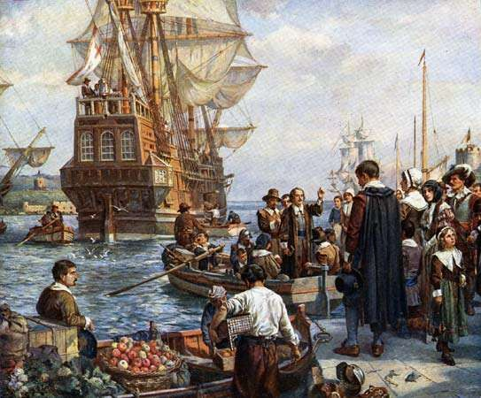
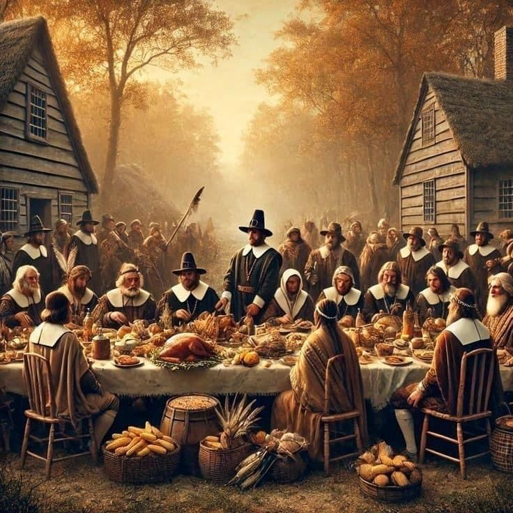
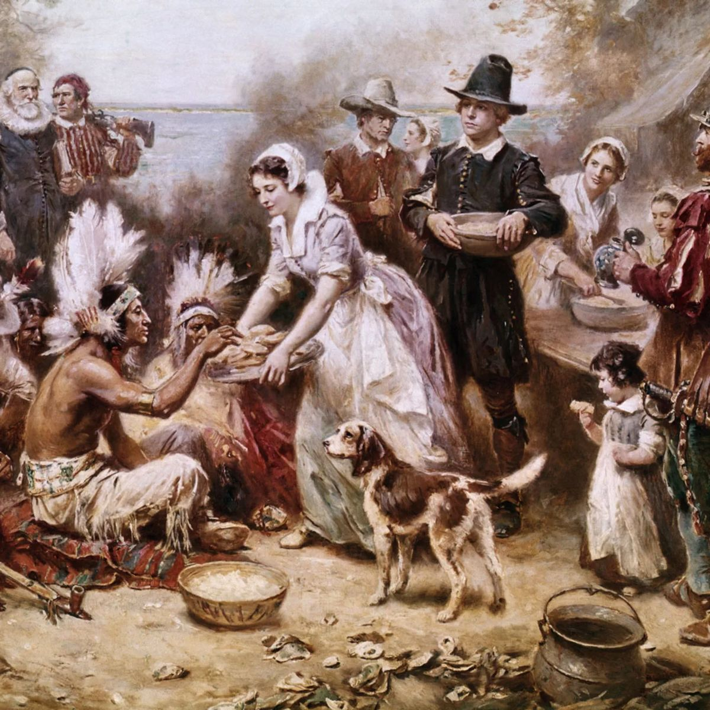
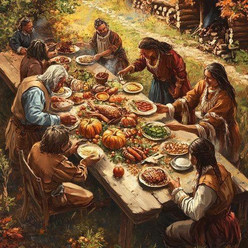

Thanksgiving began with a 1621 harvest feast shared by the Pilgrims of Plymouth Colony and the Wampanoag people, who helped the settlers survive their first year. Over time, various colonies held their own days of thanks to celebrate successful harvests or military victories. In 1789, President George Washington declared the first national day of thanksgiving, though it wasn’t yet an annual holiday. Writer Sarah Josepha Hale campaigned for decades to make Thanksgiving a national tradition. Finally, in 1863, President Abraham Lincoln proclaimed Thanksgiving a yearly national holiday to promote unity during the Civil War.

Today, Thanksgiving is celebrated in the United States on the fourth Thursday of November. Families and friends gather for a large meal that commonly includes turkey, stuffing, and other traditional dishes. Many people watch parades and football games as part of the holiday tradition. It’s also a time for expressing gratitude and reflecting on the good things in life. In recent years, some communities have also used the day to acknowledge Indigenous history and promote greater cultural understanding.

The Mayflower is central to Thanksgiving history because it carried the Pilgrims from England to North America in 1620. After a difficult journey, the passengers established Plymouth Colony, where they struggled to survive the first harsh winter. The 1621 harvest feast shared by the Pilgrims and the Wampanoag people later became the inspiration for the modern Thanksgiving holiday.

The first Thanksgiving feast, held in 1621, was a three-day celebration shared by the Pilgrims and the Wampanoag people. They gathered to give thanks for the successful harvest that helped the struggling Plymouth Colony survive. The meal included foods like venison, fowl, corn, and squash, reflecting both Pilgrim and Wampanoag traditions.

At the first Thanksgiving in 1621, the Pilgrims and Wampanoag likely ate venison brought by the Wampanoag and various kinds of wild fowl such as ducks, geese, and possibly turkey. They also had corn in the form of cornmeal or porridge, along with vegetables like squash and beans. Seafood such as fish and shellfish may have been included as well, since they were common in the region.